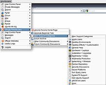

ubuntuusers Menu
Archivierte Anleitung
Dieser Artikel wurde archiviert, da er - oder Teile daraus - nur noch unter einer älteren Ubuntu-Version nutzbar ist. Diese Anleitung wird vom Wiki-Team weder auf Richtigkeit überprüft noch anderweitig gepflegt. Zusätzlich wurde der Artikel für weitere Änderungen gesperrt.
Anmerkung: Das Ubuntuusers-Menü funktioniert nur bis Firefox 3.6.x. Ab Firefox 4 arbeitet diese Erweiterung nicht mehr zuverlässig.
Zum Verständnis dieses Artikels sind folgende Seiten hilfreich:
ubuntuusers Menu  ist eine Erweiterung für die Browser Firefox und Opera. Das Menü enthält Links zu beinahe allen Bereichen von ubuntuusers.de, ubuntu-de.org und den internationalen Ubuntu Forums
ist eine Erweiterung für die Browser Firefox und Opera. Das Menü enthält Links zu beinahe allen Bereichen von ubuntuusers.de, ubuntu-de.org und den internationalen Ubuntu Forums  , sowie zu mehr als 100 weiteren Webseiten, welche für Ubuntuanwender nützlich sein können. So kann man einfach auf die offiziellen Webseiten von Ubuntu und dessen Derivate, Wikis, Foren, Internetseiten zu Hardware und Software, News, Online-Magazine und einigem mehr zugreifen.
, sowie zu mehr als 100 weiteren Webseiten, welche für Ubuntuanwender nützlich sein können. So kann man einfach auf die offiziellen Webseiten von Ubuntu und dessen Derivate, Wikis, Foren, Internetseiten zu Hardware und Software, News, Online-Magazine und einigem mehr zugreifen.
Die Firefox-Version wurde von JaiBee mit dem Python-Skript Easy Menu und einem eigenen Skript erstellt.
Installation¶
Firefox¶
ubuntuusers Menu für Firefox kann von der offiziellen Mozilla Add-On Website  installiert werden. Nach einem Klick auf "Zu Firefox hinzufügen" muss den Lizenzbestimmungen zugestimmt werden, welche auf die Lizenzen der verwendeten Elemente (Icons, Markennamen) hinweisen.
installiert werden. Nach einem Klick auf "Zu Firefox hinzufügen" muss den Lizenzbestimmungen zugestimmt werden, welche auf die Lizenzen der verwendeten Elemente (Icons, Markennamen) hinweisen.
Ab Firefox 3 lässt sich die Erweiterung alternativ auch über "Extras > Add-ons > Add-ons herunterladen" installieren. Dort im Suchfeld einfach "ubuntuusers" eingeben.
Opera¶
Da es bei Opera kein Erweiterungssystem wie bei Firefox gibt, muss man das Menü mit einem Bash-Skript installieren, welches man von der Homepage herunterladen kann. Das Skript einfach im Terminal [1] ausführen [2] und die Anweisungen befolgen.
Möchte man ubuntuusers Menu aktualisieren oder entfernen, einfach im Menü den Eintrag "Update" aufrufen.
Enthaltene Links¶
Das Menü enthält Links zu
| ubuntuusers Menu |
- ubuntuusers.de
Kontrollzentrum
Private Nachrichten
Portal
Forum
Wiki
Ikhaya
Planet
Suche
- ubuntu-de.org
Projekte
- ubuntuforums.org
Forum
Kontrollzentrum
Private Nachrichten & Abonnements
Suche
- mehr als 100 Links zu (z.T. internationalen)
Homepages von Ubuntu + Derivate,
Wikis und Dokumentationen,
Ubuntu-Foren,
Planeten,
Launchpad etc.,
Webseiten zu Hardware, Software etc.,
weitere Distributionen,
Videos & Audio,
Linux News,
"Lesestoff" (PDF-Magazine /-Bücher),
und einigem mehr.
Funktionen der Firefox-Version¶
Integration in Firefox¶
Das Menü befindet sich zusätzlich zur Menüleiste auch im Kontextmenü, sowie im Menü "Extras". Empfindet man das als störend, so kann die Funktion unter "Optionen... > Erscheinungsbild" deaktiviert werden, indem man die entsprechenden Haken entfernt.
Links in neuem Tab öffnen¶
Ab ubuntuusers Menu 1.2.0 kann man in den "Optionen... > Erscheinungsbild" einstellen, dass die Links immer in einem neuen Tab geöffnet werden sollen.
Alternativ kann man, wie auch sonst bei Firefox, die mittlere Maustaste  , beide Maustasten gleichzeitig
, beide Maustasten gleichzeitig  +
+  oder
Strg + verwenden.
oder
Strg + verwenden.
Kategorien ausblenden¶
Die Hauptkategorien der obersten Ebene, sowie deren Trennlinien, lassen sich unter "Optionen... > Untermenüs" ausblenden, indem die entsprechenden Haken entfernt werden. So kann man Platz schaffen, wenn man beispielsweise den "Ubuntu Forums"-Teil nicht benötigt.
Eigene Seiten¶
Trägt man unter "Optionen... > Eigene Seiten" seine Benutzernamen von ubuntuusers, Ubuntu Forums und Launchpad ein, kann man unter anderem auf seine eigenen Profile zugreifen. Für Ubuntu Forums ist ist teilweise eine Benutzer-ID notwendig, welche man in der Adresse zum eigenen Ubuntu Forums Profil findet: http://ubuntuforums.org/member.php?u=123456 - hier lautet die ID 123456.
Favoriten¶
Unter "Optionen... > Favoriten" lassen sich bis zu 10 verschiedene Internetseiten eintragen, welche dann im Untermenü "Favoriten" erscheinen. Dadurch kann man häufig verwendete Links, wie etwa "Neue Beiträge", schneller erreichen. Einfach "Bezeichnung" und "URL" eingeben und ein Haken bei "Favoriten anzeigen" setzen.
Weiteres¶
Steuerung mit der Tastatur¶
Das Menü kann auch ohne Maus mit der Tastatur gesteuert werden. Mit F10 wird die Menüleiste von Firefox aufgerufen und mit U in das ubuntuusers-Menü gewechselt. Mit den Pfeiltasten ↑ ↓ ← → oder mit Druck auf die unterstrichenen Buchstaben kann man durch das Menü navigieren. Mit ⏎ kann man einen Eintrag bestätigen (entspricht einem Linksklick) und mit Esc lässt sich das Menü schließen.
Suche¶
Nutzt man das Suchmenü ("Suche > ...", bzw. "Kategorie > Im ... suchen") kann man die Suchbegriffe direkt in ein aufklappendes Fenster eingeben, womit unter anderem störende Ladezeiten vermieden werden. Eine Ausnahme ist hierbei natürlich die "Erweiterte Suche", bei der die Festlegung der Suchoptionen auf ubuntuusers.de stattfindet.
Geplante Features¶
Volans , der Entwickler von Easy Menu , plant eine verbesserte Funktion zum Ausblenden und Gruppieren von Einträgen. So können in Zukunft vermutlich bestimmte Zweige oder Gruppen, z.B. alle internationale Links, ausgeblendet werden. Ob, und wann diese Funktionen zur Verfügung stehen, bleibt abzuwarten.
Bilder¶
Zum Vergrößern einfach auf die Vorschaubilder klicken.
Hinweis:
Weitere Screenshots befinden sich auf der Homepage von ubuntuusers Menu:
| Forum (Firefox) |
| Wiki (Firefox) |
| Suche (Firefox) |
| Nützliche Links (Firefox) |
| ubuntuusers Menu (Opera) |
| Nützliche Links (Opera) |
|  |
| Ubuntu Forums (Opera) |
Links¶
Internationale Add-ons¶
 Ubuntu-it Menu - Italien
Ubuntu-it Menu - Italien Ubuntu-hu menü - Ungarn
Ubuntu-hu menü - UngarnUbuntu-vn Search Bar - Vietnam
Ubuntistas menu - Griechenland

- Erstellt mit Inyoka
-
 2004 – 2017 ubuntuusers.de • Einige Rechte vorbehalten
2004 – 2017 ubuntuusers.de • Einige Rechte vorbehalten
Lizenz • Kontakt • Datenschutz • Impressum • Serverstatus -
Serverhousing gespendet von